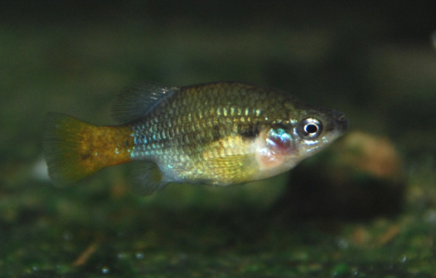

Systématique
- Ordre : Cyprinodontiformes
- Famille : Goodeidae
- Genre : Xenotoca
- Espèce : X. lyonsi
- Auteur : Domínguez-Domínguez et al., 2016

Xenotoca lyonsi est un poisson vivipare matrotrophe robuste, endémique d'un système fluvial spécifique au Mexique. Bien qu'il ressemble physiquement à X. eiseni, il s'en distingue par des caractéristiques génétiques et morphologiques précises, notamment une silhouette plus allongée et des différences dans la pigmentation des mâles.
Le mâle mesure entre 5 et 6 cm, tandis que la femelle peut atteindre 7 à 8 cm. Les mâles adultes présentent une coloration bleu-violet métallique sur la partie antérieure du corps, tandis que le pédoncule caudal et la nageoire caudale sont d'un rouge ou orange vif. Une marque humérale sombre est souvent visible derrière l'opercule. La femelle est plus sobre, arborant une couleur de fond olivâtre ou grise avec des reflets argentés.
L'espèce est classée "En danger" (EN) par l'UICN. Ses populations naturelles sont menacées par la dégradation de l'habitat, la pollution industrielle du bassin du Rio Armería et la compétition avec des espèces exotiques introduites. Elle fait l'objet de programmes de conservation en captivité (EAZA, GWG).
Xenotoca lyonsi est une espèce dynamique, très active et dotée d'un tempérament parfois agressif, typique des "Red-tailed goodeids". Il est impératif de maintenir ce poisson en groupe (6 à 8 individus minimum) pour répartir les tensions et observer les interactions sociales complexes. Les mâles passent une grande partie de leur temps à parader vigoureusement.
En aquarium, il nécessite un volume d'eau suffisant et un décor structuré avec des plantes robustes et des racines pour offrir des zones de retrait aux femelles ou aux individus dominés. C'est un nageur infatigable qui occupe toutes les strates du bac.
Mode : Vivipare matrotrophe.
Comme les autres Goodeinae, la fécondation est interne (via l'andropodium) et les embryons sont nourris par la mère à l'aide de trophotaeniae. La gestation dure environ 55 à 60 jours.
Les portées sont généralement de 15 à 30 alevins, bien que des femelles âgées puissent en produire davantage. Les nouveau-nés sont très grands à la naissance (environ 15 mm) et sont capables de consommer immédiatement des proies de taille standard. Ils sont particulièrement robustes mais bénéficient d'une végétation dense pour échapper à la curiosité parfois brusque des adultes.
Dimorphisme sexuel : Le mâle possède un andropodium (nageoire anale modifiée) et des couleurs vives (bleu et rouge). La femelle est nettement plus grande, plus massive, avec une coloration discrète.
Espérance de vie : 3 à 5 ans en aquarium.
L'espèce est endémique du bassin du Rio Coahuayana (principalement le Rio Tamazula) dans l'État de Jalisco, au Mexique. On la trouve dans des rivières, des ruisseaux et des sources à courant modéré.
L'eau de son habitat naturel est alcaline et dure. La température y est tropicale mais fluctuante, l'espèce s'épanouissant entre 20 et 24 °C. Le substrat est composé de galets, de sable et de roches, souvent recouvert d'un biofilm d'algues dont le poisson se nourrit.
Répartition

Origine naturelle :
- Mexique : Bassin du Rio Coahuayana (Tamazula, Jalisco).
- Affluents et sources du système fluvial supérieur.
- Distribution restreinte et menacée par l'activité humaine.
Les populations sauvages sont surveillées de près. L'espèce est plus sensible à la pollution que X. variata.
Paramètres de maintenance
Température : 20 à 25 °C. Éviter les chaleurs extrêmes maintenues.
pH : 7,2 à 8,2.
GH : 10 à 25 °dGH.
Courant : Moyen.
Volume conseillé : Minimum 100-120 L pour un groupe, compte tenu de leur vivacité.
Régime alimentaire
Régime : Omnivore à tendance algivore.
Très vorace en aquarium. Il accepte flocons et granulés, mais une part végétale importante est indispensable pour sa santé (spiruline, algues). Les nourritures vivantes ou congelées (artémias, daphnies) favorisent la coloration et la reproduction.